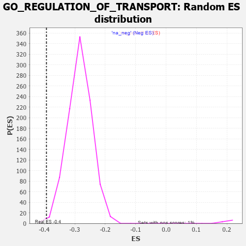

| | | Dataset | 7d |
| Phenotype | NoPhenotypeAvailable |
| Upregulated in class | na_neg |
| GeneSet | GO_REGULATION_OF_TRANSPORT |
| Enrichment Score (ES) | -0.39338395 |
| Normalized Enrichment Score (NES) | -1.386751 |
| Nominal p-value | 0.004036327 |
| FDR q-value | 0.3563953 |
| FWER p-Value | 1.0 |
Table: GSEA Results Summary
 Fig 1: Enrichment plot: GO_REGULATION_OF_TRANSPORT
Fig 1: Enrichment plot: GO_REGULATION_OF_TRANSPORT
Profile of the Running ES Score & Positions of GeneSet Members on the Rank Ordered List
| PROBE | GENE SYMBOL | GENE_TITLE | RANK IN GENE LIST | RANK METRIC SCORE | RUNNING ES | CORE ENRICHMENT | | 1 | SYT2 | | | 8 | 5.577 | 0.0246 | No |
| 2 | TGFB3 | | | 49 | 2.654 | 0.0315 | No |
| 3 | RAC2 | | | 60 | 2.442 | 0.0414 | No |
| 4 | IRS1 | | | 98 | 1.659 | 0.0441 | No |
| 5 | DISP3 | | | 110 | 1.525 | 0.0497 | No |
| 6 | ADCY8 | | | 124 | 1.418 | 0.0545 | No |
| 7 | FOXF1 | | | 176 | 1.136 | 0.0530 | No |
| 8 | RHOU | | | 210 | 1.031 | 0.0534 | No |
| 9 | NSF | | | 243 | 0.947 | 0.0535 | No |
| 10 | THADA | | | 253 | 0.931 | 0.0566 | No |
| 11 | DPH3 | | | 287 | 0.844 | 0.0562 | No |
| 12 | CNST | | | 317 | 0.792 | 0.0560 | No |
| 13 | DLL1 | | | 337 | 0.760 | 0.0570 | No |
| 14 | YRDC | | | 341 | 0.757 | 0.0601 | No |
| 15 | GSK3A | | | 351 | 0.745 | 0.0623 | No |
| 16 | PLD1 | | | 381 | 0.716 | 0.0618 | No |
| 17 | BAX | | | 387 | 0.711 | 0.0644 | No |
| 18 | SUFU | | | 443 | 0.665 | 0.0602 | No |
| 19 | LRP1 | | | 470 | 0.648 | 0.0598 | No |
| 20 | NUP54 | | | 505 | 0.627 | 0.0582 | No |
| 21 | HTRA2 | | | 527 | 0.621 | 0.0583 | No |
| 22 | KCND2 | | | 617 | 0.590 | 0.0493 | No |
| 23 | GLMN | | | 632 | 0.583 | 0.0501 | No |
| 24 | RBM4 | | | 649 | 0.576 | 0.0506 | No |
| 25 | CPSF6 | | | 778 | 0.538 | 0.0363 | No |
| 26 | NSUN2 | | | 901 | 0.506 | 0.0225 | No |
| 27 | WLS | | | 907 | 0.505 | 0.0242 | No |
| 28 | ZPR1 | | | 967 | 0.491 | 0.0187 | No |
| 29 | AKT1 | | | 1040 | 0.476 | 0.0114 | No |
| 30 | MEF2C | | | 1054 | 0.473 | 0.0119 | No |
| 31 | RINT1 | | | 1110 | 0.462 | 0.0067 | No |
| 32 | SRC | | | 1128 | 0.459 | 0.0066 | No |
| 33 | KMT2A | | | 1130 | 0.458 | 0.0086 | No |
| 34 | UBL5 | | | 1162 | 0.452 | 0.0066 | No |
| 35 | RFX3 | | | 1171 | 0.451 | 0.0076 | No |
| 36 | TFDP1 | | | 1180 | 0.450 | 0.0086 | No |
| 37 | PARL | | | 1290 | 0.432 | -0.0037 | No |
| 38 | KCNH7 | | | 1305 | 0.427 | -0.0036 | No |
| 39 | NRDE2 | | | 1320 | 0.425 | -0.0035 | No |
| 40 | EXOC1 | | | 1403 | 0.409 | -0.0124 | No |
| 41 | YIPF5 | | | 1406 | 0.409 | -0.0108 | No |
| 42 | P2RY1 | | | 1416 | 0.407 | -0.0101 | No |
| 43 | INHBB | | | 1514 | 0.388 | -0.0211 | No |
| 44 | XPO4 | | | 1518 | 0.388 | -0.0197 | No |
| 45 | ERP29 | | | 1589 | 0.376 | -0.0272 | No |
| 46 | DERL2 | | | 1632 | 0.368 | -0.0310 | No |
| 47 | BACE1 | | | 1673 | 0.360 | -0.0346 | No |
| 48 | XPO5 | | | 1700 | 0.357 | -0.0364 | No |
| 49 | JPH1 | | | 1741 | 0.347 | -0.0401 | No |
| 50 | SLMAP | | | 1744 | 0.346 | -0.0388 | No |
| 51 | LRP5 | | | 1769 | 0.342 | -0.0403 | No |
| 52 | NUP58 | | | 1787 | 0.340 | -0.0410 | No |
| 53 | THOC2 | | | 1796 | 0.338 | -0.0405 | No |
| 54 | ABR | | | 1812 | 0.335 | -0.0410 | No |
| 55 | FMR1 | | | 1816 | 0.334 | -0.0398 | No |
| 56 | AP2S1 | | | 1846 | 0.329 | -0.0421 | No |
| 57 | SMAD4 | | | 1860 | 0.326 | -0.0423 | No |
| 58 | NUP62 | | | 1871 | 0.324 | -0.0422 | No |
| 59 | BRSK2 | | | 1979 | 0.308 | -0.0548 | No |
| 60 | DMAP1 | | | 2025 | 0.301 | -0.0594 | No |
| 61 | KCNC2 | | | 2075 | 0.295 | -0.0645 | No |
| 62 | LRRC7 | | | 2080 | 0.294 | -0.0636 | No |
| 63 | RBM27 | | | 2111 | 0.289 | -0.0663 | No |
| 64 | SNF8 | | | 2119 | 0.288 | -0.0659 | No |
| 65 | SYK | | | 2186 | 0.278 | -0.0733 | No |
| 66 | C2CD5 | | | 2204 | 0.276 | -0.0742 | No |
| 67 | CREB1 | | | 2243 | 0.269 | -0.0780 | No |
| 68 | REST | | | 2308 | 0.259 | -0.0852 | No |
| 69 | ANO6 | | | 2339 | 0.255 | -0.0880 | No |
| 70 | BCAS3 | | | 2352 | 0.253 | -0.0884 | No |
| 71 | MIF | | | 2357 | 0.252 | -0.0878 | No |
| 72 | PPID | | | 2376 | 0.249 | -0.0890 | No |
| 73 | NCBP2 | | | 2383 | 0.248 | -0.0887 | No |
| 74 | SAE1 | | | 2390 | 0.247 | -0.0883 | No |
| 75 | BTBD9 | | | 2407 | 0.245 | -0.0893 | No |
| 76 | UBAC2 | | | 2488 | 0.229 | -0.0988 | No |
| 77 | HUWE1 | | | 2506 | 0.225 | -0.1000 | No |
| 78 | TLR1 | | | 2517 | 0.224 | -0.1003 | No |
| 79 | NUMB | | | 2519 | 0.224 | -0.0994 | No |
| 80 | BAG3 | | | 2620 | 0.209 | -0.1116 | No |
| 81 | VPS4A | | | 2654 | 0.205 | -0.1150 | No |
| 82 | PHB2 | | | 2712 | 0.197 | -0.1216 | No |
| 83 | LMAN1 | | | 2743 | 0.192 | -0.1246 | No |
| 84 | PPIA | | | 2754 | 0.190 | -0.1251 | No |
| 85 | RIOK2 | | | 2775 | 0.187 | -0.1268 | No |
| 86 | SCFD1 | | | 2783 | 0.185 | -0.1269 | No |
| 87 | FER | | | 2803 | 0.183 | -0.1286 | No |
| 88 | ARV1 | | | 2827 | 0.179 | -0.1308 | No |
| 89 | EEPD1 | | | 2835 | 0.178 | -0.1309 | No |
| 90 | PDCD5 | | | 2885 | 0.169 | -0.1366 | No |
| 91 | GOSR1 | | | 2940 | 0.159 | -0.1429 | No |
| 92 | RAB17 | | | 2950 | 0.157 | -0.1434 | No |
| 93 | RAB10 | | | 2952 | 0.157 | -0.1428 | No |
| 94 | XPO1 | | | 2960 | 0.156 | -0.1430 | No |
| 95 | ANO1 | | | 2982 | 0.152 | -0.1451 | No |
| 96 | ISCU | | | 2989 | 0.151 | -0.1452 | No |
| 97 | AZIN2 | | | 2993 | 0.150 | -0.1449 | No |
| 98 | COX17 | | | 3019 | 0.147 | -0.1475 | No |
| 99 | FEZ1 | | | 3055 | 0.142 | -0.1514 | No |
| 100 | MAP2 | | | 3074 | 0.140 | -0.1532 | No |
| 101 | CHP1 | | | 3089 | 0.138 | -0.1544 | No |
| 102 | AIMP1 | | | 3105 | 0.136 | -0.1557 | No |
| 103 | SYT8 | | | 3115 | 0.135 | -0.1563 | No |
| 104 | MTMR2 | | | 3126 | 0.133 | -0.1570 | No |
| 105 | EDEM2 | | | 3145 | 0.131 | -0.1588 | No |
| 106 | RAB4B | | | 3157 | 0.129 | -0.1596 | No |
| 107 | PSMD9 | | | 3179 | 0.125 | -0.1618 | No |
| 108 | RBM22 | | | 3182 | 0.125 | -0.1615 | No |
| 109 | AP1G1 | | | 3210 | 0.121 | -0.1645 | No |
| 110 | BET1L | | | 3224 | 0.118 | -0.1657 | No |
| 111 | SNX17 | | | 3272 | 0.110 | -0.1713 | No |
| 112 | SMAD3 | | | 3303 | 0.105 | -0.1748 | No |
| 113 | RAB8A | | | 3319 | 0.102 | -0.1763 | No |
| 114 | VPS16 | | | 3370 | 0.093 | -0.1825 | No |
| 115 | AAK1 | | | 3400 | 0.089 | -0.1859 | No |
| 116 | KCTD7 | | | 3417 | 0.088 | -0.1876 | No |
| 117 | ATG3 | | | 3471 | 0.081 | -0.1942 | No |
| 118 | HGS | | | 3476 | 0.080 | -0.1943 | No |
| 119 | CDK5 | | | 3480 | 0.080 | -0.1944 | No |
| 120 | FES | | | 3501 | 0.077 | -0.1966 | No |
| 121 | UFM1 | | | 3506 | 0.077 | -0.1968 | No |
| 122 | UBR5 | | | 3518 | 0.074 | -0.1979 | No |
| 123 | HDAC3 | | | 3528 | 0.072 | -0.1988 | No |
| 124 | MAPK3 | | | 3589 | 0.062 | -0.2064 | No |
| 125 | CBL | | | 3621 | 0.056 | -0.2102 | No |
| 126 | NOLC1 | | | 3623 | 0.056 | -0.2101 | No |
| 127 | RIC1 | | | 3627 | 0.055 | -0.2102 | No |
| 128 | ACSL4 | | | 3632 | 0.055 | -0.2105 | No |
| 129 | CCKAR | | | 3648 | 0.051 | -0.2122 | No |
| 130 | FIS1 | | | 3654 | 0.051 | -0.2126 | No |
| 131 | DHX9 | | | 3693 | 0.044 | -0.2174 | No |
| 132 | NF1 | | | 3713 | 0.040 | -0.2198 | No |
| 133 | SYT11 | | | 3732 | 0.036 | -0.2220 | No |
| 134 | HTR1B | | | 3745 | 0.035 | -0.2234 | No |
| 135 | REEP2 | | | 3800 | 0.027 | -0.2304 | No |
| 136 | DGKQ | | | 3856 | 0.020 | -0.2375 | No |
| 137 | IFIH1 | | | 3919 | 0.006 | -0.2456 | No |
| 138 | PPM1A | | | 3953 | 0.002 | -0.2500 | No |
| 139 | STX18 | | | 3962 | 0.000 | -0.2510 | No |
| 140 | VPS35 | | | 3989 | -0.006 | -0.2544 | No |
| 141 | DDX58 | | | 3998 | -0.007 | -0.2554 | No |
| 142 | TOR1A | | | 4030 | -0.013 | -0.2595 | No |
| 143 | CLIC6 | | | 4037 | -0.014 | -0.2602 | No |
| 144 | ATG5 | | | 4051 | -0.016 | -0.2618 | No |
| 145 | PDE4B | | | 4089 | -0.022 | -0.2666 | No |
| 146 | MTOR | | | 4114 | -0.025 | -0.2696 | No |
| 147 | ABL1 | | | 4125 | -0.027 | -0.2708 | No |
| 148 | WNK3 | | | 4153 | -0.034 | -0.2742 | No |
| 149 | HNF4A | | | 4157 | -0.034 | -0.2745 | No |
| 150 | SYT12 | | | 4172 | -0.037 | -0.2761 | No |
| 151 | PDX1 | | | 4179 | -0.038 | -0.2767 | No |
| 152 | AP2B1 | | | 4185 | -0.039 | -0.2772 | No |
| 153 | ENY2 | | | 4195 | -0.041 | -0.2782 | No |
| 154 | VPS11 | | | 4202 | -0.041 | -0.2788 | No |
| 155 | ARL2 | | | 4254 | -0.050 | -0.2853 | No |
| 156 | RAN | | | 4299 | -0.059 | -0.2908 | No |
| 157 | SAR1A | | | 4304 | -0.060 | -0.2911 | No |
| 158 | SYT17 | | | 4310 | -0.061 | -0.2914 | No |
| 159 | BAG4 | | | 4314 | -0.061 | -0.2915 | No |
| 160 | STAC | | | 4327 | -0.064 | -0.2928 | No |
| 161 | ADRB2 | | | 4352 | -0.068 | -0.2957 | No |
| 162 | RALA | | | 4416 | -0.079 | -0.3036 | No |
| 163 | PRR5L | | | 4418 | -0.080 | -0.3034 | No |
| 164 | REEP6 | | | 4441 | -0.084 | -0.3059 | No |
| 165 | SETD2 | | | 4443 | -0.084 | -0.3056 | No |
| 166 | KCNQ4 | | | 4452 | -0.085 | -0.3063 | No |
| 167 | LRRK2 | | | 4467 | -0.087 | -0.3077 | No |
| 168 | JPH3 | | | 4481 | -0.091 | -0.3090 | No |
| 169 | HIP1 | | | 4485 | -0.092 | -0.3090 | No |
| 170 | MEF2A | | | 4499 | -0.095 | -0.3103 | No |
| 171 | PLPP4 | | | 4533 | -0.101 | -0.3141 | No |
| 172 | RTN2 | | | 4537 | -0.102 | -0.3141 | No |
| 173 | VPS28 | | | 4582 | -0.114 | -0.3193 | No |
| 174 | SYT4 | | | 4590 | -0.116 | -0.3197 | No |
| 175 | PNKD | | | 4591 | -0.116 | -0.3192 | No |
| 176 | ADTRP | | | 4612 | -0.120 | -0.3213 | No |
| 177 | RAB21 | | | 4620 | -0.122 | -0.3216 | No |
| 178 | MYLK | | | 4651 | -0.128 | -0.3250 | No |
| 179 | CHMP3 | | | 4660 | -0.129 | -0.3254 | No |
| 180 | ITPR1 | | | 4661 | -0.130 | -0.3248 | No |
| 181 | CRBN | | | 4695 | -0.138 | -0.3286 | No |
| 182 | ARF6 | | | 4704 | -0.140 | -0.3290 | No |
| 183 | RAP1B | | | 4706 | -0.140 | -0.3285 | No |
| 184 | PXK | | | 4726 | -0.144 | -0.3303 | No |
| 185 | RAB5C | | | 4752 | -0.149 | -0.3329 | No |
| 186 | PLCG1 | | | 4770 | -0.151 | -0.3344 | No |
| 187 | PIM1 | | | 4776 | -0.152 | -0.3344 | No |
| 188 | SARAF | | | 4781 | -0.153 | -0.3342 | No |
| 189 | MYO5A | | | 4787 | -0.155 | -0.3342 | No |
| 190 | CD151 | | | 4791 | -0.156 | -0.3338 | No |
| 191 | PCLO | | | 4793 | -0.156 | -0.3333 | No |
| 192 | TERT | | | 4801 | -0.157 | -0.3335 | No |
| 193 | P2RX4 | | | 4813 | -0.161 | -0.3342 | No |
| 194 | FBXW7 | | | 4816 | -0.161 | -0.3337 | No |
| 195 | WDR1 | | | 4824 | -0.163 | -0.3339 | No |
| 196 | SGK1 | | | 4852 | -0.168 | -0.3366 | No |
| 197 | DLG1 | | | 4860 | -0.169 | -0.3368 | No |
| 198 | CLU | | | 4889 | -0.174 | -0.3397 | No |
| 199 | VAMP8 | | | 4905 | -0.179 | -0.3408 | No |
| 200 | PDPK1 | | | 5043 | -0.207 | -0.3579 | No |
| 201 | DRD2 | | | 5088 | -0.221 | -0.3627 | No |
| 202 | ITSN1 | | | 5094 | -0.222 | -0.3623 | No |
| 203 | BEST3 | | | 5106 | -0.227 | -0.3627 | No |
| 204 | MMP9 | | | 5108 | -0.227 | -0.3618 | No |
| 205 | DOC2B | | | 5113 | -0.229 | -0.3613 | No |
| 206 | LMAN2 | | | 5155 | -0.238 | -0.3656 | No |
| 207 | SMO | | | 5195 | -0.247 | -0.3696 | No |
| 208 | IPO5 | | | 5207 | -0.248 | -0.3699 | No |
| 209 | CLCN2 | | | 5224 | -0.250 | -0.3708 | No |
| 210 | TMF1 | | | 5225 | -0.251 | -0.3697 | No |
| 211 | SCN1A | | | 5260 | -0.261 | -0.3730 | No |
| 212 | PTEN | | | 5262 | -0.261 | -0.3719 | No |
| 213 | CDK1 | | | 5264 | -0.262 | -0.3708 | No |
| 214 | PICK1 | | | 5265 | -0.263 | -0.3696 | No |
| 215 | RIMS2 | | | 5272 | -0.265 | -0.3692 | No |
| 216 | MAGI2 | | | 5295 | -0.269 | -0.3708 | No |
| 217 | RAB7A | | | 5302 | -0.271 | -0.3704 | No |
| 218 | NPY2R | | | 5331 | -0.281 | -0.3728 | No |
| 219 | ITPR3 | | | 5361 | -0.288 | -0.3753 | No |
| 220 | GRIN1 | | | 5381 | -0.291 | -0.3764 | No |
| 221 | FZD5 | | | 5386 | -0.292 | -0.3756 | No |
| 222 | DLG4 | | | 5388 | -0.293 | -0.3744 | No |
| 223 | KCNC4 | | | 5414 | -0.298 | -0.3763 | No |
| 224 | EFHB | | | 5447 | -0.306 | -0.3791 | No |
| 225 | CPT1A | | | 5467 | -0.311 | -0.3802 | No |
| 226 | TRIM9 | | | 5526 | -0.327 | -0.3863 | No |
| 227 | EDEM1 | | | 5541 | -0.331 | -0.3867 | No |
| 228 | SIDT2 | | | 5542 | -0.331 | -0.3851 | No |
| 229 | FGFR1 | | | 5543 | -0.332 | -0.3836 | No |
| 230 | EHD1 | | | 5560 | -0.336 | -0.3842 | No |
| 231 | SPHK1 | | | 5576 | -0.339 | -0.3846 | No |
| 232 | NUCB1 | | | 5579 | -0.340 | -0.3833 | No |
| 233 | G6PD | | | 5638 | -0.358 | -0.3893 | No |
| 234 | WNK1 | | | 5650 | -0.362 | -0.3891 | No |
| 235 | CASP8 | | | 5678 | -0.369 | -0.3909 | No |
| 236 | CD63 | | | 5680 | -0.370 | -0.3894 | No |
| 237 | MTCL1 | | | 5697 | -0.374 | -0.3897 | No |
| 238 | DGKI | | | 5725 | -0.384 | -0.3915 | Yes |
| 239 | CALCR | | | 5730 | -0.386 | -0.3903 | Yes |
| 240 | ENSA | | | 5739 | -0.388 | -0.3896 | Yes |
| 241 | MX2 | | | 5745 | -0.390 | -0.3884 | Yes |
| 242 | TLR2 | | | 5761 | -0.395 | -0.3886 | Yes |
| 243 | VAMP7 | | | 5777 | -0.399 | -0.3887 | Yes |
| 244 | ABCG1 | | | 5778 | -0.399 | -0.3869 | Yes |
| 245 | TRPC6 | | | 5784 | -0.401 | -0.3857 | Yes |
| 246 | LAMP1 | | | 5796 | -0.404 | -0.3853 | Yes |
| 247 | ADA | | | 5798 | -0.405 | -0.3836 | Yes |
| 248 | SNX4 | | | 5834 | -0.415 | -0.3863 | Yes |
| 249 | CDK16 | | | 5869 | -0.425 | -0.3888 | Yes |
| 250 | RAB13 | | | 5870 | -0.425 | -0.3868 | Yes |
| 251 | KCNQ1 | | | 5918 | -0.441 | -0.3910 | Yes |
| 252 | RAB4A | | | 5919 | -0.441 | -0.3890 | Yes |
| 253 | STK11 | | | 5922 | -0.443 | -0.3872 | Yes |
| 254 | ACTN2 | | | 5960 | -0.458 | -0.3900 | Yes |
| 255 | STAC2 | | | 5987 | -0.466 | -0.3912 | Yes |
| 256 | KCNH6 | | | 5988 | -0.467 | -0.3891 | Yes |
| 257 | SYT9 | | | 5992 | -0.469 | -0.3873 | Yes |
| 258 | GCC2 | | | 5994 | -0.470 | -0.3853 | Yes |
| 259 | NETO2 | | | 6009 | -0.475 | -0.3850 | Yes |
| 260 | XBP1 | | | 6011 | -0.475 | -0.3829 | Yes |
| 261 | HVCN1 | | | 6034 | -0.482 | -0.3836 | Yes |
| 262 | TRPC3 | | | 6035 | -0.483 | -0.3814 | Yes |
| 263 | RAC1 | | | 6036 | -0.484 | -0.3792 | Yes |
| 264 | PPT1 | | | 6038 | -0.485 | -0.3771 | Yes |
| 265 | VAMP3 | | | 6043 | -0.487 | -0.3754 | Yes |
| 266 | CALR | | | 6077 | -0.499 | -0.3774 | Yes |
| 267 | ATG13 | | | 6110 | -0.508 | -0.3793 | Yes |
| 268 | DLG2 | | | 6126 | -0.513 | -0.3789 | Yes |
| 269 | SCN9A | | | 6146 | -0.518 | -0.3790 | Yes |
| 270 | ROCK1 | | | 6152 | -0.520 | -0.3773 | Yes |
| 271 | KCNQ5 | | | 6161 | -0.524 | -0.3759 | Yes |
| 272 | GOPC | | | 6167 | -0.528 | -0.3742 | Yes |
| 273 | STIM1 | | | 6169 | -0.528 | -0.3719 | Yes |
| 274 | INSR | | | 6204 | -0.538 | -0.3739 | Yes |
| 275 | KCNH8 | | | 6225 | -0.545 | -0.3740 | Yes |
| 276 | EHD4 | | | 6227 | -0.545 | -0.3716 | Yes |
| 277 | RGN | | | 6233 | -0.547 | -0.3698 | Yes |
| 278 | CDC42 | | | 6236 | -0.548 | -0.3675 | Yes |
| 279 | STK39 | | | 6274 | -0.563 | -0.3698 | Yes |
| 280 | FLOT1 | | | 6276 | -0.564 | -0.3673 | Yes |
| 281 | SYTL4 | | | 6304 | -0.578 | -0.3682 | Yes |
| 282 | GALR2 | | | 6355 | -0.599 | -0.3721 | Yes |
| 283 | TRPM4 | | | 6390 | -0.612 | -0.3737 | Yes |
| 284 | RALB | | | 6399 | -0.617 | -0.3720 | Yes |
| 285 | MBL2 | | | 6411 | -0.623 | -0.3705 | Yes |
| 286 | CSK | | | 6428 | -0.630 | -0.3697 | Yes |
| 287 | ABCA2 | | | 6433 | -0.634 | -0.3674 | Yes |
| 288 | LIPG | | | 6468 | -0.648 | -0.3689 | Yes |
| 289 | SYT15 | | | 6472 | -0.650 | -0.3663 | Yes |
| 290 | DYSF | | | 6481 | -0.654 | -0.3643 | Yes |
| 291 | WDR54 | | | 6491 | -0.658 | -0.3625 | Yes |
| 292 | DPP4 | | | 6501 | -0.663 | -0.3606 | Yes |
| 293 | VAMP2 | | | 6525 | -0.672 | -0.3606 | Yes |
| 294 | REM1 | | | 6530 | -0.676 | -0.3580 | Yes |
| 295 | P2RX5 | | | 6576 | -0.699 | -0.3607 | Yes |
| 296 | CLN3 | | | 6580 | -0.699 | -0.3579 | Yes |
| 297 | ARF1 | | | 6583 | -0.701 | -0.3549 | Yes |
| 298 | TPR | | | 6597 | -0.709 | -0.3534 | Yes |
| 299 | TUB | | | 6611 | -0.718 | -0.3518 | Yes |
| 300 | SCYL2 | | | 6621 | -0.724 | -0.3496 | Yes |
| 301 | ACSL5 | | | 6643 | -0.737 | -0.3490 | Yes |
| 302 | RAB5A | | | 6655 | -0.741 | -0.3471 | Yes |
| 303 | VPS18 | | | 6659 | -0.743 | -0.3440 | Yes |
| 304 | DPP6 | | | 6676 | -0.751 | -0.3427 | Yes |
| 305 | MPC2 | | | 6683 | -0.753 | -0.3400 | Yes |
| 306 | CPLX1 | | | 6684 | -0.753 | -0.3366 | Yes |
| 307 | PAK1 | | | 6691 | -0.757 | -0.3339 | Yes |
| 308 | EGFR | | | 6708 | -0.765 | -0.3325 | Yes |
| 309 | GSK3B | | | 6719 | -0.768 | -0.3303 | Yes |
| 310 | ADAM9 | | | 6808 | -0.819 | -0.3381 | Yes |
| 311 | GIPC1 | | | 6819 | -0.826 | -0.3356 | Yes |
| 312 | LYAR | | | 6828 | -0.830 | -0.3328 | Yes |
| 313 | AHI1 | | | 6860 | -0.848 | -0.3330 | Yes |
| 314 | HCN1 | | | 6895 | -0.865 | -0.3335 | Yes |
| 315 | DISP1 | | | 6928 | -0.887 | -0.3337 | Yes |
| 316 | SNX33 | | | 6930 | -0.888 | -0.3297 | Yes |
| 317 | MIB1 | | | 6932 | -0.890 | -0.3258 | Yes |
| 318 | SNX3 | | | 6934 | -0.893 | -0.3218 | Yes |
| 319 | GHSR | | | 6937 | -0.894 | -0.3179 | Yes |
| 320 | SCN4A | | | 6955 | -0.910 | -0.3160 | Yes |
| 321 | DNM1L | | | 6963 | -0.913 | -0.3127 | Yes |
| 322 | PIM3 | | | 6964 | -0.914 | -0.3085 | Yes |
| 323 | RUFY2 | | | 6986 | -0.927 | -0.3070 | Yes |
| 324 | CCR2 | | | 7003 | -0.939 | -0.3048 | Yes |
| 325 | MYH10 | | | 7048 | -0.966 | -0.3062 | Yes |
| 326 | GRM5 | | | 7053 | -0.969 | -0.3022 | Yes |
| 327 | CFTR | | | 7143 | -1.030 | -0.3092 | Yes |
| 328 | SYT1 | | | 7148 | -1.033 | -0.3050 | Yes |
| 329 | PTPRJ | | | 7180 | -1.054 | -0.3042 | Yes |
| 330 | TSPO | | | 7194 | -1.065 | -0.3011 | Yes |
| 331 | ABCA1 | | | 7243 | -1.113 | -0.3023 | Yes |
| 332 | HCN4 | | | 7260 | -1.134 | -0.2992 | Yes |
| 333 | CIB1 | | | 7280 | -1.152 | -0.2964 | Yes |
| 334 | ANK2 | | | 7298 | -1.170 | -0.2932 | Yes |
| 335 | GPD1L | | | 7343 | -1.215 | -0.2934 | Yes |
| 336 | KMO | | | 7432 | -1.308 | -0.2990 | Yes |
| 337 | MYRIP | | | 7443 | -1.323 | -0.2943 | Yes |
| 338 | KCNB1 | | | 7444 | -1.327 | -0.2882 | Yes |
| 339 | CD22 | | | 7534 | -1.449 | -0.2932 | Yes |
| 340 | CALM1 | | | 7567 | -1.499 | -0.2905 | Yes |
| 341 | TRPV6 | | | 7569 | -1.502 | -0.2838 | Yes |
| 342 | BEST1 | | | 7601 | -1.554 | -0.2807 | Yes |
| 343 | IWS1 | | | 7613 | -1.587 | -0.2749 | Yes |
| 344 | KCNN2 | | | 7629 | -1.611 | -0.2694 | Yes |
| 345 | MCU | | | 7644 | -1.637 | -0.2638 | Yes |
| 346 | GRIA3 | | | 7648 | -1.642 | -0.2566 | Yes |
| 347 | HCN2 | | | 7662 | -1.668 | -0.2507 | Yes |
| 348 | ANK3 | | | 7690 | -1.740 | -0.2462 | Yes |
| 349 | ADCY1 | | | 7695 | -1.752 | -0.2387 | Yes |
| 350 | MYO6 | | | 7697 | -1.753 | -0.2308 | Yes |
| 351 | BOK | | | 7715 | -1.817 | -0.2247 | Yes |
| 352 | ASIC1 | | | 7726 | -1.838 | -0.2176 | Yes |
| 353 | RNF31 | | | 7744 | -1.895 | -0.2111 | Yes |
| 354 | PDE4D | | | 7764 | -1.944 | -0.2047 | Yes |
| 355 | GRIK5 | | | 7792 | -2.044 | -0.1988 | Yes |
| 356 | TRAF6 | | | 7818 | -2.157 | -0.1922 | Yes |
| 357 | PKD2 | | | 7822 | -2.167 | -0.1826 | Yes |
| 358 | KCNC1 | | | 7835 | -2.249 | -0.1739 | Yes |
| 359 | GRIA1 | | | 7836 | -2.260 | -0.1635 | Yes |
| 360 | TCAF2 | | | 7854 | -2.428 | -0.1546 | Yes |
| 361 | TRAF2 | | | 7861 | -2.481 | -0.1440 | Yes |
| 362 | CALM3 | | | 7869 | -2.525 | -0.1333 | Yes |
| 363 | FYN | | | 7881 | -2.622 | -0.1227 | Yes |
| 364 | GRIA2 | | | 7885 | -2.684 | -0.1108 | Yes |
| 365 | CAV3 | | | 7896 | -2.739 | -0.0995 | Yes |
| 366 | TCAF1 | | | 7901 | -2.803 | -0.0872 | Yes |
| 367 | NPSR1 | | | 7913 | -2.947 | -0.0751 | Yes |
| 368 | ASIC2 | | | 7917 | -2.995 | -0.0617 | Yes |
| 369 | ARRB1 | | | 7935 | -3.377 | -0.0484 | Yes |
| 370 | PASK | | | 7946 | -3.674 | -0.0329 | Yes |
| 371 | DAPK1 | | | 7950 | -3.767 | -0.0160 | Yes |
| 372 | GRIA4 | | | 7961 | -4.049 | 0.0013 | Yes |
Table: GSEA details [plain text format]

Fig 2: GO_REGULATION_OF_TRANSPORT: Random ES distribution
Gene set null distribution of ES for GO_REGULATION_OF_TRANSPORT